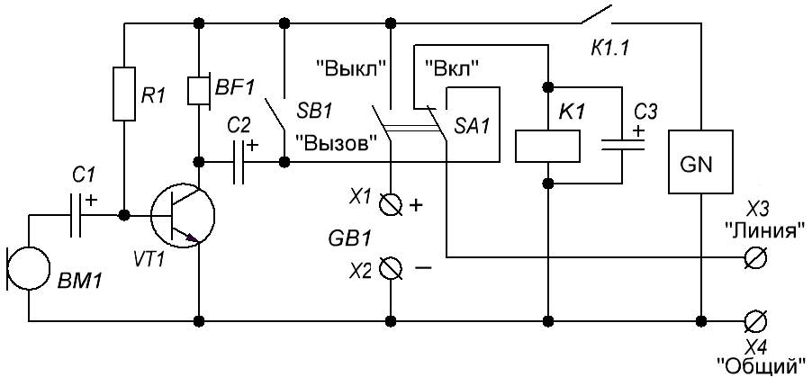
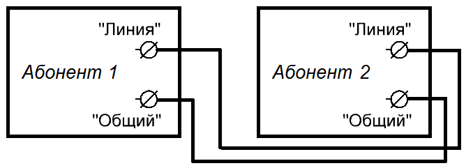

Простое переговорное устройство
С помощью такого переговорного устройства можно обеспечить связь между двумя объектами, находящимися на небольшом расстоянии друг от друга. Если в качестве питания в устройстве используются автомобильные аккумуляторы с каждой стороны, устройство может работать автономно, и не зависить от наличия электричества.
В качестве проводов лучше использовать провода для телефонной связи («полевка»). Чем меньше суммарное сопротивление проводов, тем на большее расстояние можно удалить абонентов друг от друга. Чем больше длина линии связи, тем большее напряжение нужно для питания схемы, так как возрастают потери в проводах.
Для организации связи необходимо изготовить два устройства по схеме на рис. 1. Эти устройства соединяют между собой по одноименным контактам с помощью проводов (рис. 2).

Таблица 1
| Обозначение | Тип | Номинал | Количество | Примечание |
|---|---|---|---|---|
| BF1 | Телефон | ТОН-2 | 1 | с сопротивлением не менее 1400 Ом |
| BM1 | Микрофон | МК-164 | 1 | угольные |
| C1 | Конденсатор электролитический | 10 мкФ×16В | 1 | |
| C2 | Конденсатор электролитический | 20 мкФ×16В | 1 | |
| C3 | Конденсатор электролитический | 100 мкФ×16В | 1 | |
| GB1 | Батарея элементов | 9 В | 1 | 8-12 В |
| GN | Генератор звуковых частот | 1 | мультивибратор на отдельной плате | |
| K1 | Реле | РЭС10 (паспорт 302) |
1 | любые маломощные, с напряжением срабатывания 4…5 В. |
| R1 | Резистор | 470 кОм | 1 | |
| SB1 | Выключатель кнопочный | 1 | без фиксацией | |
| SA1 | Переключатель | П2К | 1 | с фиксацией |
| VT1 | Транзистор биполярный | КТ342В | 1 | КТ312 ,КТ315Б , КТ503 |

В исходном положении переключатели SA1 обоих абонентов находятся в положении «Выкл.», и реле К1 подключены к линии связи. Для подачи сигнала вызова одному из абонентов необходимо переключатель SA1 установить в положение "Вкл" и замкнуть кнопку SB1 «Вызов». При этом напряжение питания с батареи GB1 поступит в линию связи. Поскольку другой абонент находится в режиме ожидания, поданное первым абонентом напряжение включит реле второго абонента, которое своей контактной группой К1.1 подаст питание на генератор сигнала вызова GN, представляющий собой мультивибратор (генератор звуковых частот). Этот сигнал услышит второй абонент.
После этого он включает свой тумблер SA1, коллекторы транзисторов VT1 обоих абонентов соединяются через конденсаторы С2. Усиленные звуковые сигналы микрофонов ВМ1 одновременно воспроизводятся телефонами BF1. Таким образом устанавливается дуплексная связь. При окончании связи тумблеры SA1 переводятся в состояние «Выкл.», и устройство принимает исходное положение.
При налаживании устройства необходимо установить режимы работы транзисторов (подбором резистора R1) так, чтобы на их коллекторах было напряжение 3 В.
В качестве источника питания можно использовать автомобильные аккумуляторы, батарейки типоразмера 373 с суммарным напряжением не менее 9 В.